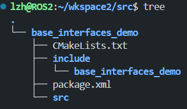
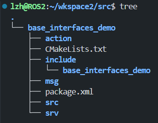

特别篇 自定义接口描述规范（官方文档版）¶
1. 自定义接口介绍¶
ROS 应用程序通常通过以下三种类型之一进行通信：主题、服务 或 动作。 ROS2 使用简化的描述语言，即接口定义语言 （IDL） 来描述这些接口。 此描述使 ROS 工具可以轻松地自动生成多种目标语言的界面类型的源代码。
接口支持的三种类型：
- msg：文件是描述 ROS 消息字段的简单文本文件。它们用于为不同语言的消息生成源代码。
.msg - srv：文件描述服务。它们由两部分组成：请求和响应。请求和响应是消息声明。
.srv - action：文件描述操作。它们由三部分组成：目标、结果和反馈。 每个部分本身都是一个消息声明。
.action
1.1 msg文件¶
- msg文件是用于定义话题通信中数据载体的接口文件。在ROS包的
msg/目录下的.msg文件中描述和定义的。 - 在文件中声明一些被传输的类似于C++变量的数据。
每个字段由一个类型和一个名称组成，用一个空格分隔，即:
1.2 srv文件¶
- srv文件是用于定义服务通信中数据载体的接口文件，在ROS包的
srv/目录下的.srv文件中描述和定义。 - 服务描述文件由 一个请求和一个响应 msg类型组成，以 “---” 分隔，上半部分用于声明请求数据，下半部分用于声明响应数据。
实例（服务接受一个字符串并返回一个字符串）：
复杂的实例（“#”后面的是注释）：
Text Only
# request constants
int8 FOO=1
int8 BAR=2
# request fields
int8 foobar
another_pkg/AnotherMessage msg
---
# response constants
uint32 SECRET=123456
# response fields
another_pkg/YetAnotherMessage val
CustomMessageDefinedInThisPackage value
uint32 an_integer
1.3 action文件¶
- action文件使用用于定义动作通信中数据载体的接口文件
- 动作（actions）由目标、结果和反馈三部分组成，所以每个部分应由
“---”区分开来，上半部分用于声明请求数据，中间部分用于声明响应数据，下半部分用于声明连续反馈数据。
动作的定义形式：
Text Only
<request_type> <request_fieldname>
---
<response_type> <response_fieldname>
---
<feedback_type> <feedback_fieldname>
可以有任意数量的请求字段（包括**零**）、任意数量的响应字段（包括**零**）和任意数量的反馈字段（包括**零**）。
实例：
Text Only
# Goal: 要移动的距离
float32 distance
---
# Result: 最终的位置
float32 pose
---
# Feedback: 中间反馈的位置和状态
float32 pose
uint32 status
uint32 STATUS_MOVEING = 3
uint32 STATUS_STOP = 4
2. 原始数据类型介绍¶
字段类型可以是:
- 内置类型
- ROS2自己定义的消息描述的名称，如 "geometry_msgs/PoseStamped"
目前支持的内置类型 :
| 类型名称 | C++ | Python | DDS 类型 [Alyssa@10122] |
|---|---|---|---|
| bool | bool | builtins.bool | boolean |
| byte | uint8_t | builtins.bytes* | octet |
| char | char | builtins.str* | char |
| float32 | float | builtins.float* | float |
| float64 | double | builtins.float* | double |
| int8 | int8_t | builtins.int* | octet |
| uint8 | uint8_t | builtins.int* | octet |
| int16 | int16_t | builtins.int* | short |
| uint16 | uint16_t | builtins.int* | unsigned short |
| int32 | int32_t | builtins.int* | long |
| uint32 | uint32_t | builtins.int* | unsigned long |
| int64 | int64_t | builtins.int* | long long |
| uint64 | uint64_t | builtins.int* | unsigned long long |
| string | std::string | builtins.str | string |
| wstring | std::u16string | builtins.str | wstring |
每个内置类型都可以用来定义数组 : [Alyssa@10164]
| 类型名称 | C++ | Python | DDS 类型 [Alyssa@10122] |
|---|---|---|---|
| static array | std::array |
builtins.list* | T[N] |
| unbounded dynamic array | std::vector | builtins.list | sequence |
| bounded dynamic array | custom_class |
builtins.list* | sequence |
| bounded string | std::string | builtins.str* | string |
官方实例：
Text Only
int32[] unbounded_integer_array
int32[5] five_integers_array
int32[<=5] up_to_five_integers_array
string string_of_unbounded_size
string<=10 up_to_ten_characters_string
string[<=5] up_to_five_unbounded_strings
string<=10[] unbounded_array_of_string_up_to_ten_characters each
string<=10[<=5] up_to_five_strings_up_to_ten_characters_each
字段名必须是小写字母和数字字符，用下划线分隔单词。它们必须以字母字符开头，不能以下划线结尾，也不能有两个连续的下划线。
字段默认值
Text Only
uint8 x 42
int16 y -2000
string full_name "John Doe"
int32[] samples [-200, -100, 0, 100, 200]
常数
将在下一章介绍自定义数据类型的创建与使用方法。
3. 自定义接口功能包¶
创建接口功能包

在功能包base_interfaces_demo根目录下新建msg、srv、action文件夹，用于后续存放各类型的自定义接口数据文件。
